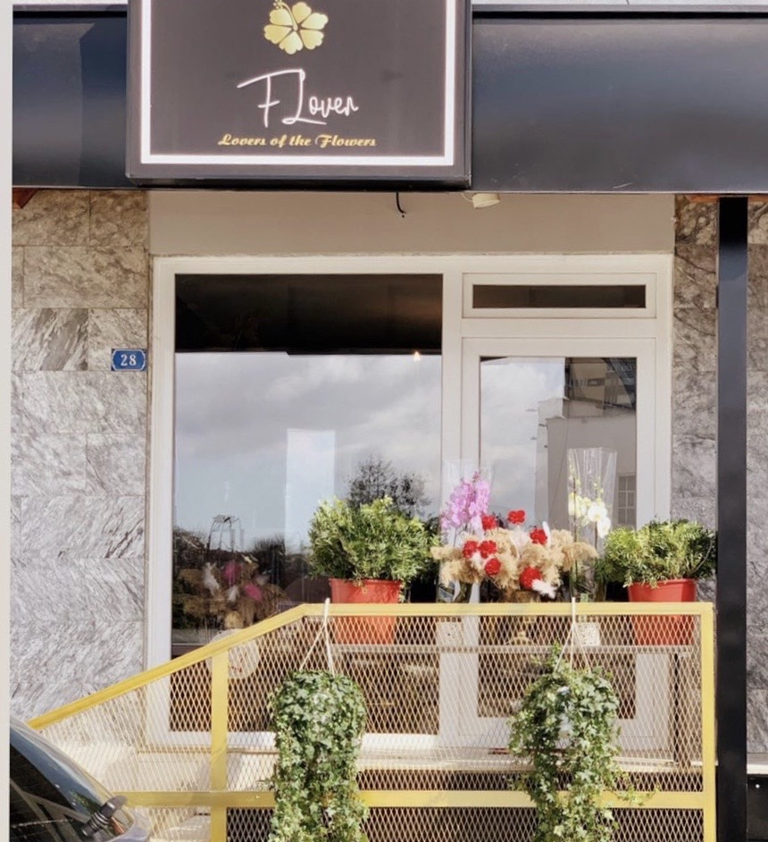

ABOUT US
About FLoverKs
FLover has been proudly serving costumers for 3 years now. We are two girls who are committed to offering only the finest floral arrangements and gifts. Because all of our costumers are important, we are dedicated to making your experience a pleasant one. This is why we always go the extra mile to make your floral gift as perfect as we can. With a wide variety of colors, sizes, and seasonal themes, you can buy flowers and gifts for everyone. With same-day delivery, we're also your source for last minute gifts, too. Giving your gift that special touch.
The services we offer are:
- Gift and hand-tied Bouqetes.
- Arrangements for weddings and promos.
- Corporate events.
- Different gifts including handmade one.
- Free floral consultations.
- Flower delivery.
Shop Hours
Our shop is currently open from 9:00am to 6:00pm Monday through Friday and from 09:00am to 4:00pm on Saturday. We are closed on Sundays. To help assure on-time delivery during the busy holiday season, place your order at least 1 week prior to the following holidays: Mother's Day and Valentine's Day.
Location and Contact info
We're located on Gjilan, st.Bulevardi i Pavaresise (near Comodita Home). You can reach out through Facebook or through Instagram. You can also call us on our phone number +383 45 699 919